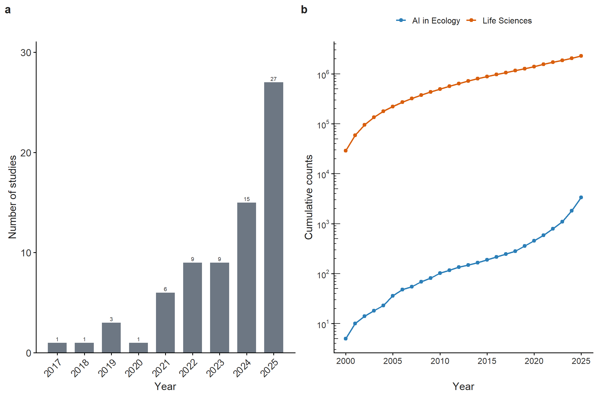

This supplementary material accompanies our systematic mapping paper: The first systematic map of systematic reviews on the usage of AI in ecology. It contains all R codes to make result figures.
we used the following search string for Life science evidence synthesis papers:
SUBJAREA(AGRI OR BIOC OR IMMU OR NEUR OR PHAR) TITLE-ABS-KEY ( ("review" OR "systematic map" OR "systematic surv*" OR "literature surv*" OR "recent advancements" OR insight* OR meta-analysis OR metareview* OR "meta epidemiolog*" OR "meta-epidemiolog*" OR "critical review*" OR "scoping review*" OR "rapid review*") )
# Read AI yearly counts -----# This first tries the simple two-column CSV.# If that does not return valid Year and Count columns, it falls back to# parsing a raw Scopus "Analyze Year" export.ai_path <-file.path(data_dir, "AI_SysRev_counts.csv")ai_counts <-suppressWarnings(read_csv(ai_path, show_col_types =FALSE) |>rename_with(~str_remove(.x, "^\ufeff")) |>select(1:2) |>rename(Year =1, Count =2) |>mutate(Year =as.integer(Year),Count =as.numeric(Count) ))if (all(is.na(ai_counts$Year)) ||all(is.na(ai_counts$Count))) { ai_lines <-readLines(ai_path, warn =FALSE, encoding ="UTF-8") ai_lines <-sub("^\ufeff", "", ai_lines) ai_lines <-trimws(ai_lines) ai_lines <- ai_lines[nzchar(ai_lines)] ai_lines <- ai_lines[str_detect(ai_lines, '^"?\\d{4}"?\\s*,\\s*"?[0-9,]+"?$')] ai_split <-str_split_fixed(str_remove_all(ai_lines, '"'), ",", n =2) ai_counts <-tibble(Year =as.integer(trimws(ai_split[, 1])),Count =as.numeric(gsub(",", "", trimws(ai_split[, 2]))) )}ai_counts <- ai_counts |>filter(!is.na(Year), !is.na(Count)) |>group_by(Year) |>summarise(Count =sum(Count), .groups ="drop") |>mutate(Series ="AI in Ecology")# Read Life Sciences yearly counts -----life_path <-file.path(data_dir, "LifeSci_SysRev_counts.csv")life_counts <-suppressWarnings(read_csv(life_path, show_col_types =FALSE) |>rename_with(~str_remove(.x, "^\ufeff")) |>select(1:2) |>rename(Year =1, Count =2) |>mutate(Year =as.integer(Year),Count =as.numeric(Count) ))if (all(is.na(life_counts$Year)) ||all(is.na(life_counts$Count))) { life_lines <-readLines(life_path, warn =FALSE, encoding ="UTF-8") life_lines <-sub("^\ufeff", "", life_lines) life_lines <-trimws(life_lines) life_lines <- life_lines[nzchar(life_lines)] life_lines <- life_lines[str_detect(life_lines, '^"?\\d{4}"?\\s*,\\s*"?[0-9,]+"?$')] life_split <-str_split_fixed(str_remove_all(life_lines, '"'), ",", n =2) life_counts <-tibble(Year =as.integer(trimws(life_split[, 1])),Count =as.numeric(gsub(",", "", trimws(life_split[, 2]))) )}life_counts <- life_counts |>filter(!is.na(Year), !is.na(Count)) |>group_by(Year) |>summarise(Count =sum(Count), .groups ="drop") |>mutate(Series ="Life Sciences")# Combine both series and remove incomplete future years ----counts_long <-bind_rows(ai_counts, life_counts) |>filter(Year <=2025)# Common theme ----plot_theme <-theme_classic(base_size =11) +theme(text =element_text(color ="#222222"),axis.text =element_text(color ="#333333"),plot.title =element_text(face ="bold"),plot.subtitle =element_text(color ="#555555"),legend.title =element_blank(),legend.position ="top" )# 2017 to 2025 data ----counts_2017_2025 <- counts_long |>filter(Year >=2017, Year <=2025) |>group_by(Series) |>complete(Year =2017:2025, fill =list(Count =0)) |>arrange(Series, Year) |>ungroup()cumulative_2017_2025 <- counts_2017_2025 |>group_by(Series) |>arrange(Year, .by_group =TRUE) |>mutate(Count =cumsum(Count)) |>ungroup()# 2000 to 2025 data ----counts_2000_2025 <- counts_long |>filter(Year >=2000, Year <=2025) |>group_by(Series) |>complete(Year =2000:2025, fill =list(Count =0)) |>arrange(Series, Year) |>ungroup()cumulative_2000_2025 <- counts_2000_2025 |>group_by(Series) |>arrange(Year, .by_group =TRUE) |>mutate(Count =cumsum(Count)) |>ungroup()fig_comparison <-ggplot(cumulative_2000_2025, aes(x = Year, y = Count, color = Series)) +geom_line(linewidth =0.9) +geom_point(size =2) +scale_x_continuous(breaks =seq(2000, 2025, by =5)) +scale_y_log10(breaks = scales::trans_breaks("log10", function(x) 10^x),labels = scales::trans_format("log10", scales::math_format(10^.x)) ) +annotation_logticks(sides ="l") +scale_color_manual(values =c("AI in Ecology"="#2C7FB8", "Life Sciences"="#D95F0E")) +labs(title ="AI in Ecology vs Life Science",subtitle ="2000-2025 | Log10 y-axis",x ="Year",y ="Cumulative counts",caption ="Counts are based on yearly database retrieval totals from Scopus exports, not the final screened review set." ) + plot_theme
fig_annual + fig_comparison

Growth rate
# Simple descriptive summary ----summary_2000_2025 <- counts_2000_2025 |>group_by(Series) |>summarise(start_count = Count[Year ==2000],end_count = Count[Year ==2025],absolute_increase = end_count - start_count,fold_change = end_count / start_count,CAGR = (end_count / start_count)^(1/ (2025-2000)) -1,.groups ="drop" )summary_2000_2025# Series start_count end_count absolute_increase fold_change CAGR# <chr> <dbl> <dbl> <dbl> <dbl> <dbl># 1 AI in Ecology 5 1551 1546 310. 0.258 # 2 Life Sciences 28996 230701 201705 7.96 0.0865# LM on log-transformed counts -----# This is easy to interpret alongside the log-scale figure.lm_2000_2025 <-lm(log10(Count) ~ Year * Series, data = counts_2000_2025)summary(lm_2000_2025)# Call:# lm(formula = log10(Count) ~ Year * Series, data = counts_2000_2025)# # Residuals:# Min 1Q Median 3Q Max # -0.35816 -0.05980 -0.00107 0.04025 0.70604 # # Coefficients:# Estimate Std. Error t value Pr(>|t|) # (Intercept) -1.673e+02 1.013e+01 -16.522 < 2e-16 ***# Year 8.385e-02 5.032e-03 16.664 < 2e-16 ***# SeriesLife Sciences 1.075e+02 1.432e+01 7.505 1.24e-09 ***# Year:SeriesLife Sciences -5.169e-02 7.116e-03 -7.265 2.89e-09 ***# ---# Signif. codes: 0 ‘***’ 0.001 ‘**’ 0.01 ‘*’ 0.05 ‘.’ 0.1 ‘ ’ 1# # Residual standard error: 0.1924 on 48 degrees of freedom# Multiple R-squared: 0.9894, Adjusted R-squared: 0.9887 # F-statistic: 1490 on 3 and 48 DF, p-value: < 2.2e-16# Interpretation ----# - Year = yearly change for the reference series# - Year:SeriesLife Sciences = difference in slope between Life Sciences# and AI in Ecology## If Year:SeriesLife Sciences is negative,# AI in Ecology is increasing faster on a relative scale.
To compare long-term growth in database-level yearly retrieval counts from 2000 to 2025, we first calculated simple descriptive metrics for each series, including the absolute increase in counts, fold change, and compound annual growth rate (CAGR).
We then fitted a linear model to log-transformed annual counts:
log10(Count) ~ Year * Series
In this model, Year represents the temporal slope for the reference series, and Year:SeriesLife Sciences represents how much the Life Sciences slope differs from the AI in Ecology slope. A negative interaction term therefore indicates that AI in Ecology increased faster than Life Sciences on a relative scale.
The descriptive summary showed that Life Sciences had a much larger absolute increase in yearly retrieval counts (of course!), whereas AI in Ecology showed a much larger fold change and CAGR. Consistent with this, the interaction term in the log-linear model was negative, indicating a steeper relative increase for AI in Ecology over time.
The following folding scripts are Poisson/Quasi-Poisson glm models
Code
# Poisson GLM on counts ----# This treats the response as count data directly.glm_2000_2025 <-glm(Count ~ Year * Series, family =poisson(link ="log"), data = counts_2000_2025)summary(glm_2000_2025)# Call:# glm(formula = Count ~ Year * Series, family = poisson(link = "log"), # data = counts_2000_2025)# # Coefficients:# Estimate Std. Error z value Pr(>|z|) # (Intercept) -7.826e+02 1.369e+01 -57.16 <2e-16 ***# Year 3.899e-01 6.768e-03 57.61 <2e-16 ***# SeriesLife Sciences 6.382e+02 1.369e+01 46.61 <2e-16 ***# Year:SeriesLife Sciences -3.126e-01 6.769e-03 -46.18 <2e-16 ***# ---# Signif. codes: 0 ‘***’ 0.001 ‘**’ 0.01 ‘*’ 0.05 ‘.’ 0.1 ‘ ’ 1# # (Dispersion parameter for poisson family taken to be 1)# # Null deviance: 3853372 on 51 degrees of freedom# Residual deviance: 18748 on 48 degrees of freedom# AIC: 19230# # Number of Fisher Scoring iterations: 5# Overdispersion check ----deviance(glm_2000_2025) /df.residual(glm_2000_2025)# Quasi-Poisson GLM ----# Use this if the Poisson model looks overdispersed.glm_2000_2025_quasi <-glm( Count ~ Year * Series,family =quasipoisson(link ="log"),data = counts_2000_2025)summary(glm_2000_2025_quasi)# # Call:# glm(formula = Count ~ Year * Series, family = quasipoisson(link = "log"), # data = counts_2000_2025)# # Coefficients:# Estimate Std. Error t value Pr(>|t|) # (Intercept) -782.5979 280.3033 -2.792 0.00750 **# Year 0.3899 0.1386 2.814 0.00707 **# SeriesLife Sciences 638.2064 280.3319 2.277 0.02731 * # Year:SeriesLife Sciences -0.3126 0.1386 -2.256 0.02868 * # ---# Signif. codes: 0 ‘***’ 0.001 ‘**’ 0.01 ‘*’ 0.05 ‘.’ 0.1 ‘ ’ 1# # (Dispersion parameter for quasipoisson family taken to be 419.1293)# # Null deviance: 3853372 on 51 degrees of freedom# Residual deviance: 18748 on 48 degrees of freedom# AIC: NA# # Number of Fisher Scoring iterations: 5
Figure 3: AI algorithms, eras, and tasks
## panel A: algorithm frequency ----algo_bar <-as.data.table(dat_algorithms)[ , .(used =1L), by = .(FileID, Algorithm)][ , .(n_studies = .N), by = Algorithm][order(n_studies)]bar_algorithm <-ggplot( algo_bar,aes(x =reorder(Algorithm, n_studies), y = n_studies)) +geom_col(fill = pal_main[["slate"]]) +coord_flip() +labs(x =NULL, y ="Number of studies") +theme_am()bar_algorithm
n_reviews <-nrow(map_data)study_col <-"Study ID (format: first author_year_letterIfNeeded )"item_cols <-names(appraisal_data)[5:ncol(appraisal_data)]# organise labels label_map <-c("Provided citation, DOI or open access to published protocol"="Protocol available","Provided Boolean-style full search string and state the platform for which the string is formatted (e.g., Web of Science format)"="Full search string reported","The authors indicated whether they considered non-English studies during the screening process"="Non-English reviews considered","Described the process by which the comprehensiveness of the search strategy was assessed (i.e., list of benchmark articles)"="Search comprehensiveness assessed","Described the methodology for screening articles/studies for relevance. Methods for consistency of screening decisions (at title, abstract, and full texts levels) checking must be described."="Screening method described","Provided the number of articles retained following full text screening"="Full-text inclusion counts provided","Provided a file and/or table containing raw extracted quantitative or qualitative data (study findings) from included studies"="Raw extracted data provided","Provided metadata (i.e. detailed description of extracted raw variables) in a separate table, list and/or file for included studies"="Metadata provided","Described any financial or non-financial competing interests that the review authors may have or provided a statement of the absence of any potential competing interests"="Competing interests reported","Provided any supplemental files"="Supplemental files provided","The authors reported which languages were included in the literature search"="Search languages reported","If the authors explicitly stated that they intended to include any studies in languages other than English in their final dataset, select “Yes”."="Intended non-English inclusion","The authors reported using non-English search terms or provided search strings formatted for non-English databases as part of their search strategy."="Non-English search terms reported","The authors described the data extraction process (who extracted, double-checking, and consistency)"="Data extraction process described","The authors reported and visualised the review flow and the number of studies retained at each stage (e.g., in a PRISMA/ROSES diagram)."="PRISMA/ROSES diagram provided","The authors provided bibliographic information (for example, author, year, title, DOI) for all studies included in the synthesis."="Included studies listed","The authors provided bibliographic information for studies excluded at the full-text screening stage, including reasons for exclusion."="Excluded full texts listed","The authors provided analysis and/or figure-generation computer code/scripts."="Analysis or figure code provided")short_labels <-unname(label_map[item_cols])short_labels[is.na(short_labels)] <-clean_title(item_cols[is.na(short_labels)])classify_appraisal <-function(x) { out <-case_when(is.na(x) ~"NA",str_detect(str_to_lower(as.character(x)), "^yes") ~"Yes",str_detect(str_to_lower(as.character(x)), "^part") ~"Partially",str_detect(str_to_lower(as.character(x)), "^no") ~"No",TRUE~"NA" )factor(out, levels =c("NA", "No", "Partially", "Yes"))}appraisal_long <- appraisal_data |>mutate(Year =as.integer(str_extract(.data[[study_col]], "\\d{4}")),Group_pre2025 =if_else(Year <2025, "Reviews before 2025", "Reviews published in 2025") ) |>select(all_of(study_col), Year, Group_pre2025, all_of(item_cols)) |>pivot_longer(all_of(item_cols), names_to ="item_raw", values_to ="response_raw") |>mutate(item =factor(short_labels[match(item_raw, item_cols)], levels =rev(short_labels)),response =classify_appraisal(response_raw) )summarise_appraisal <-function(dat, group_label) { n_group <-n_distinct(dat[[study_col]]) dat |>count(item, response, name ="n") |>complete(item, response, fill =list(n =0)) |>group_by(item) |>mutate(prop = n /sum(n)) |>ungroup() |>mutate(Group =paste0(group_label, "\n(n = ", n_group, ")"))}appraisal_summary <-bind_rows(summarise_appraisal(appraisal_long, "All reviews"),summarise_appraisal(filter(appraisal_long, Year <2025), "Reviews before 2025"),summarise_appraisal(filter(appraisal_long, Year ==2025), "Reviews published in 2025")) |>mutate(Group =factor( Group,levels =c(paste0("All reviews\n(n = ", n_reviews, ")"),paste0("Reviews before 2025\n(n = ", n_distinct(filter(appraisal_long, Year <2025)[[study_col]]), ")"),paste0("Reviews published in 2025\n(n = ", n_distinct(filter(appraisal_long, Year ==2025)[[study_col]]), ")") ) ))make_appraisal_plot <-function(dat, group_name) { dat_g <- dat |>filter(Group == group_name) item_order <- dat_g |>filter(response =="Yes") |>arrange(desc(prop), item) |>pull(item) dat_g <- dat_g |>mutate(item =factor(item, levels =rev(item_order)) )ggplot(dat_g, aes(x = prop, y = item, fill = response)) +geom_col(width =0.75, color ="white", linewidth =0.15) +scale_x_continuous(labels =percent_format(accuracy =1),expand =expansion(mult =c(0, 0.01)) ) +scale_fill_manual(values = pal_appraisal, drop =FALSE) +labs(x ="Proportion of studies",y =NULL,fill ="Assessment",title = group_name) +guides(fill =guide_legend(nrow =1, byrow =TRUE, reverse =TRUE)) +theme_am(base_size =8.5) +theme(legend.position ="bottom",panel.grid.major.x =element_line(color ="#E1E1E1", linewidth =0.25),plot.title =element_text(face ="bold", size =9),axis.text.y =element_text(size =7.8) )}group_levels <-levels(appraisal_summary$Group)fig_appraisal_all <-make_appraisal_plot(appraisal_summary, group_levels[1])fig_appraisal_pre2025 <-make_appraisal_plot(appraisal_summary, group_levels[2])fig_appraisal_2025 <-make_appraisal_plot(appraisal_summary, group_levels[3])fig_appraisal_all / (fig_appraisal_pre2025 + fig_appraisal_2025) +plot_layout(guides ="collect") &theme(legend.position ="bottom")
![]()